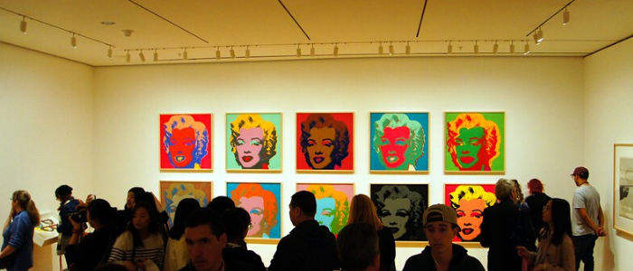
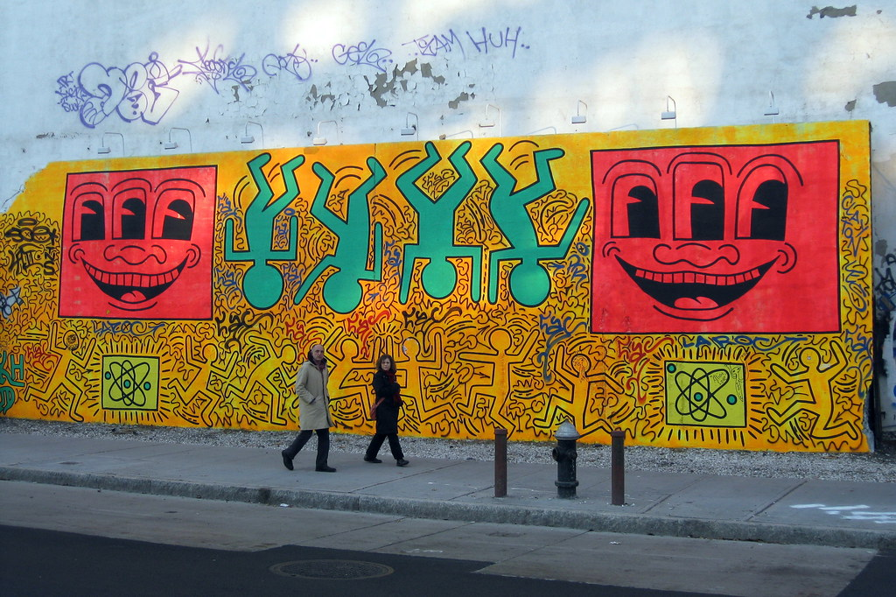
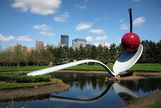
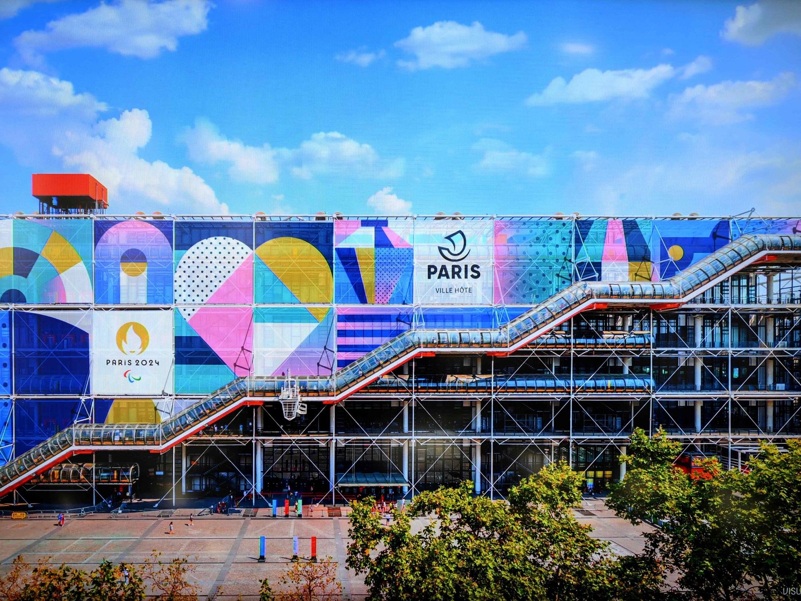
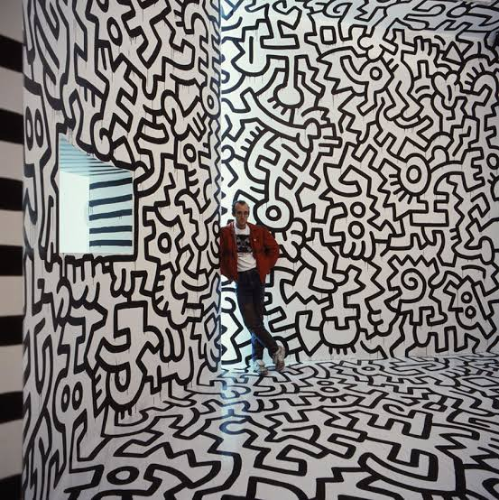
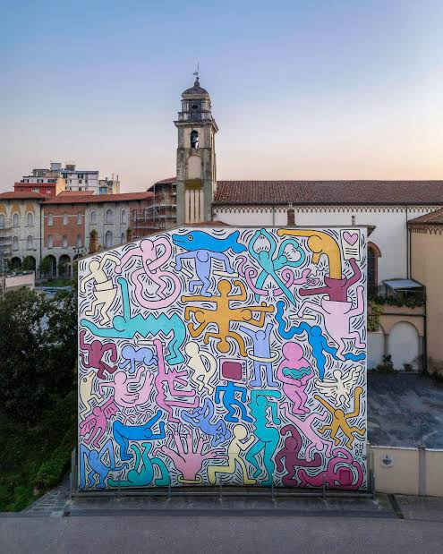
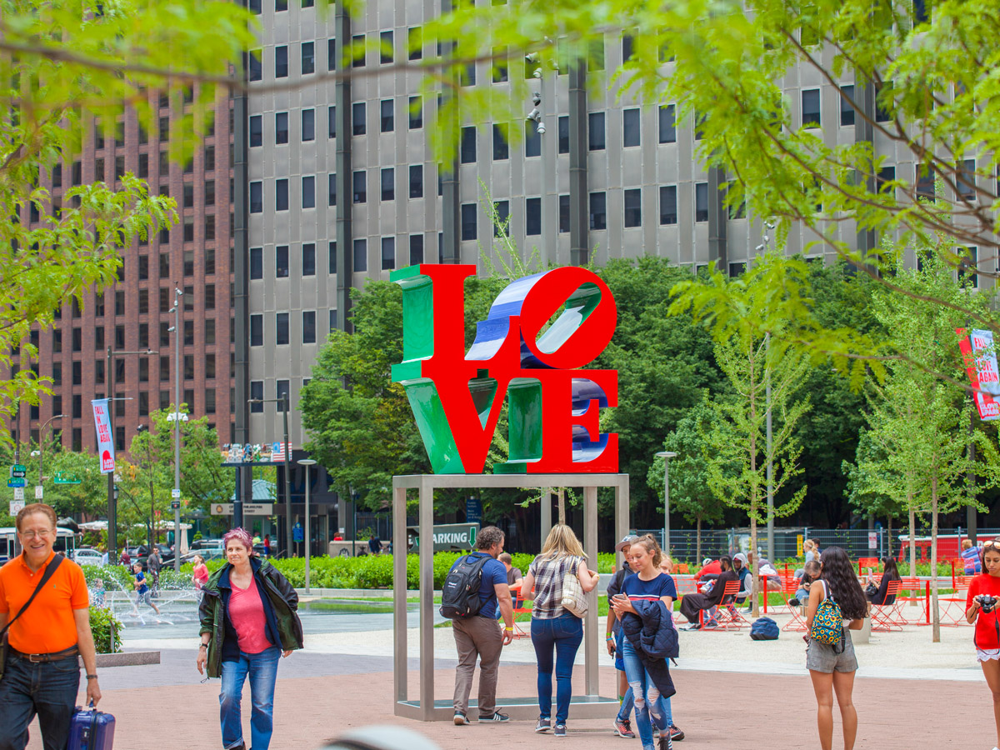

GALERÍA DE ESPACIOS & MUSEOS

MoMA — Nueva York
Sala de Colección Permanente

Andy Warhol Retrospective
Tate Modern — Londres

Bowery Wall Mural
SoHo — Nueva York

Spoonbridge and Cherry
Claes Oldenburg & Coosje van Bruggen

Centre Pompidou
París — Francia

The Pop Shop (1986)
Keith Haring — Manhattan

Mural "Tuttomondo"
Pisa — Italia

LOVE Sculpture
Robert Indiana — Filadelfia